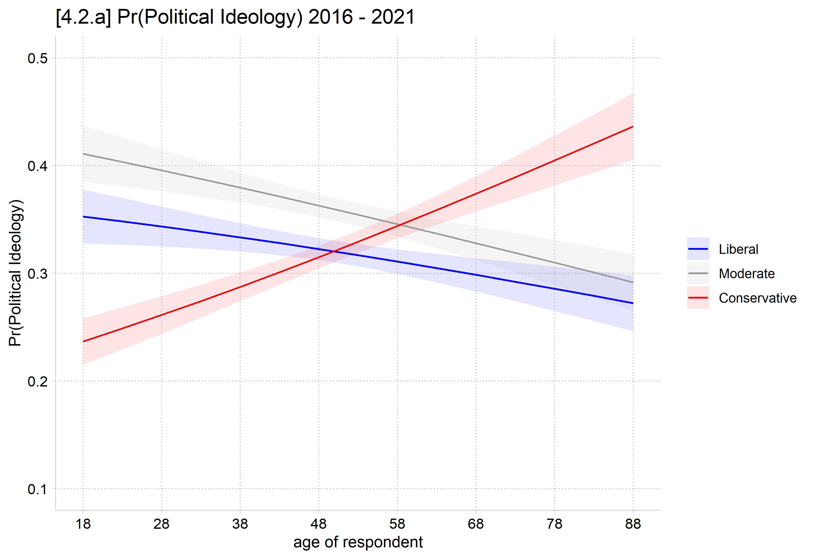

![[4.2.a] Predicted probabilities of each political ideology by age with confidence intervals: Pr(liberal) falls from about 0.35 to 0.27, Pr(moderate) falls from about 0.41 to 0.29, and Pr(conservative) rises from about 0.24 to 0.44; the conservative line crosses the others in the late 40s to 50s.](fig/cda-04_02_a-polviews.png)
library(haven) # import Stata data and labels
library(dplyr) # data manipulation
library(ggplot2) # graphs
library(nnet) # multinomial logit: multinom()
library(marginaleffects) # predictions and marginal effects
library(cleanplots) # graph scheme
cleanplots_defaults()
gss <- read_dta("https://tdmize.github.io/data/data/cda_gss.dta")
gss <- gss |> filter(year >= 2016 & year <= 2021)
# Keep model variables; drop any missing data
gss <- gss[c("polviews3", "age", "woman", "race3", "college", "married", "parent",
"faminc", "employed", "conserv")]
gss <- gss[complete.cases(gss[c("conserv", "age", "woman", "race3", "college",
"married", "parent", "faminc")]), ]
# Treat binary/nominal variables as factors
gss <- gss |>
mutate(across(c(polviews3, woman, race3, college, married, parent, employed), as_factor)) |>
droplevels()
# 3 category political views var
pol3mod <- multinom(polviews3 ~ age + woman + race3 + college + married + parent +
faminc + employed, data = gss, trace = FALSE)
# 4.2.a
plot_predictions(pol3mod, by = c("age", "group"),
newdata = datagrid(age = seq(18, 88, 5), grid_type = "counterfactual")) +
scale_color_manual(values = c("blue", "gray60", "red")) +
scale_fill_manual(values = c("blue", "gray60", "red")) +
scale_x_continuous(breaks = seq(18, 88, 10)) +
scale_y_continuous(breaks = seq(.1, .5, .1), limits = c(.1, .5)) +
labs(title = "[4.2.a] Pr(Political Ideology) 2016 - 2021",
x = "age of respondent", y = "Pr(Political Ideology)", color = NULL, fill = NULL)